| 日付 | 2008年10月18日（土） |
|---|---|
| 山域 | 奥秩父 |
| メンバー | 友人（男4女1） |
| 山行形態 | 日帰り |
| アクセス | 車 |
| ルート (Map) | 八丁峠北側駐車場→八丁峠→両神山（往復） |
両神山の山行に誘われたので行くことにする。この山に行くのは1年ぶりだ。
前回、クソ暑い中を縦走した難路・八丁尾根を今回は往復する。
9:31 駐車場到着。標高1220m。
このルートを往復するためには車が必要。
1台5人乗りと最もコストパフォーマンスが高い方法で登山口に入る。
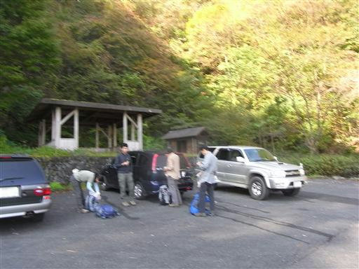
駐車場からは正面に二子山がよく見えている。
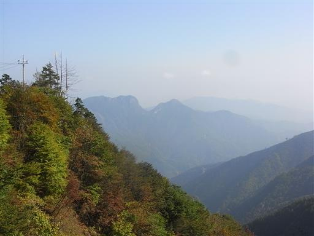
岩ルート本番の八丁尾根に辿り着くまでの間も、ところどころに鎖場がある。
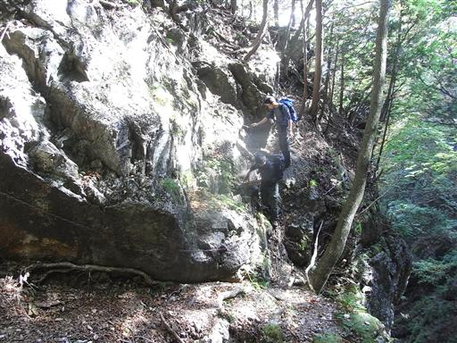
道を塞ぐ倒木は刈り払われている。
なぜか竹槍のように斜めに切られているので、先がとんがっていて危ない。
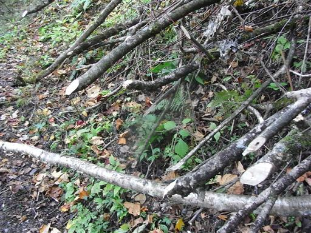
ちらほらと紅葉が見える登山道を歩きながら、八丁峠を目指す。
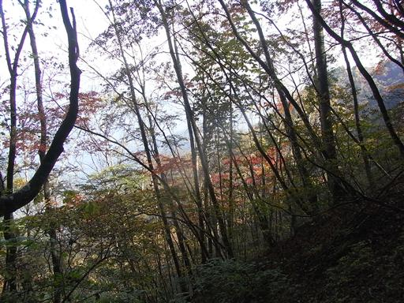
以前歩いたルートと合流し、八丁峠に到着。
ここからは岩場の連続する難ルートだ。
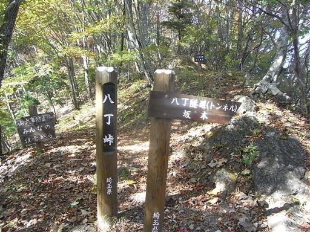
出発が遅いからか、辺りに人影は見えない。
八丁峠で小休止を取った後、両神山に向けて出発する。
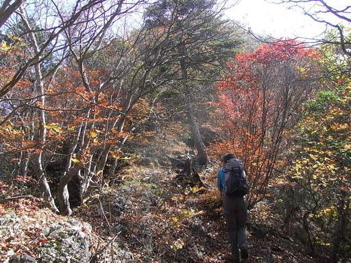
早速鎖場が現れる。
この登山道はそれほど難しい鎖場はないが、とにかく数が多い。
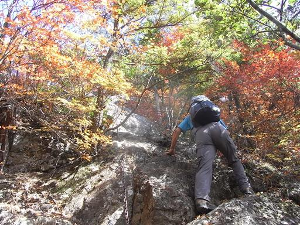
背後には岩峰突き立つ赤岩尾根が見えている。
いつかは辿ってみたい道だ。
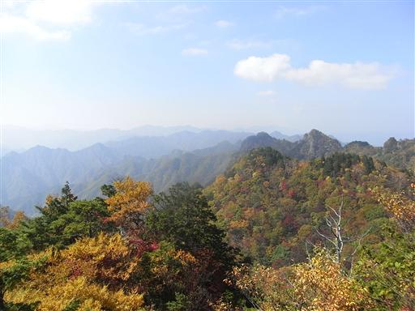
正面には両神山に続くぎざぎざの稜線が大きく聳えている。
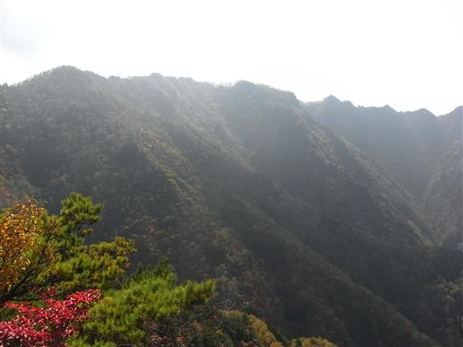
尾根道は紅葉できれいに彩られている。
まだ10月半ばなので大して期待していなかったが、意外に紅葉は進んでいる。
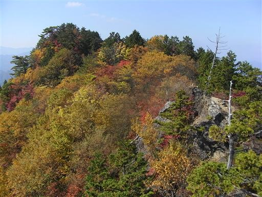
目の前に立ち塞がる巨大な岩場。この壁を直登していく。
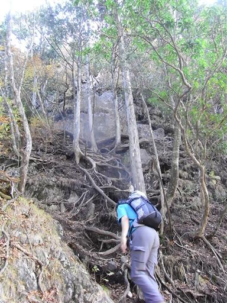
岩壁の上に出ると、すばらしい展望が広がる。
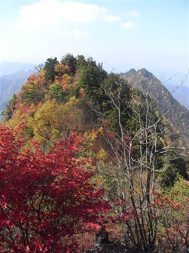
リンドウが咲いている。
この季節、花の種類は少ないが、リンドウだけはやたらたくさん咲いている。
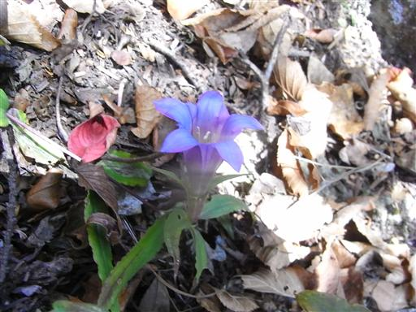
西岳から東岳へ向かう稜線上で、大きく落ち込んでいるところがある。
岩場の斜面を下り、再び登り返す。
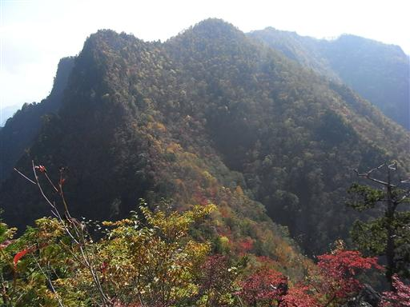
大きく落ち込んだ最低鞍部を見下ろす。
この辺りは紅葉が特にきれいだ。
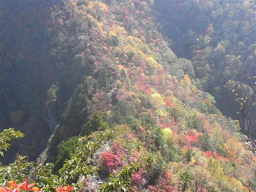
急斜面の岩場を鎖に頼りつつ下る。
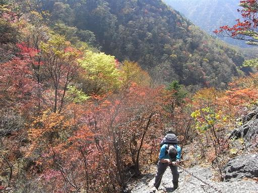
展望のよい尾根道からは奥秩父から西上州に広がる山々が見渡せる。
少々霞んでいるが、天気がよいので非常に気持がよい。
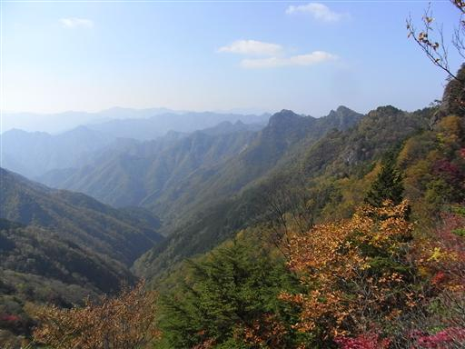
鞍部から登り返すと、下ってきた岩尾根がよく見える。
帰りはこの尾根を登り返さないといけない。
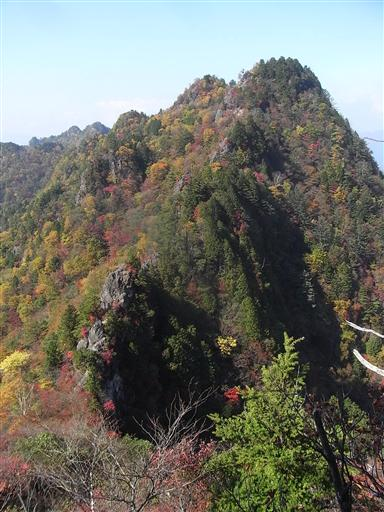
東岳山頂に到着する。
ここまで来れば両神山まであともう少しだ。

東岳からは大きく聳える岩峰が望める。
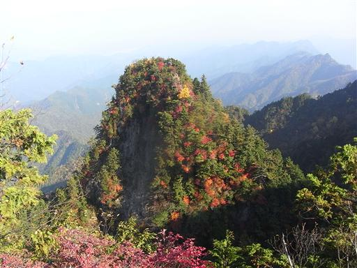
13:12 両神山山頂到着。標高1723m。
2度目の登頂だ。

山頂からの展望。前回来たときよりかは遠くまで見渡せる。
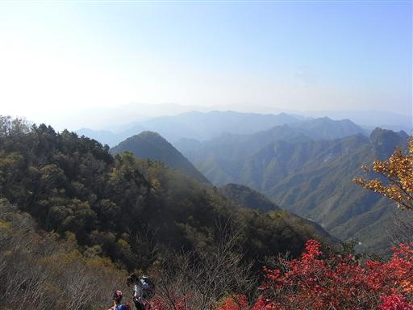
紅葉がきれいな混雑期。
多くの登山道を持つこの山は、山頂が狭いこともあり人があふれている。
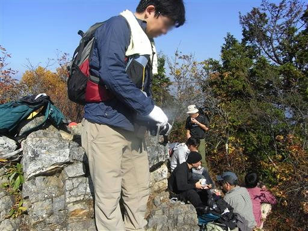
山頂の岩場にはポツリと一本だけ小さな木が生えている。
きれいに紅葉しているのでよく目立つ。
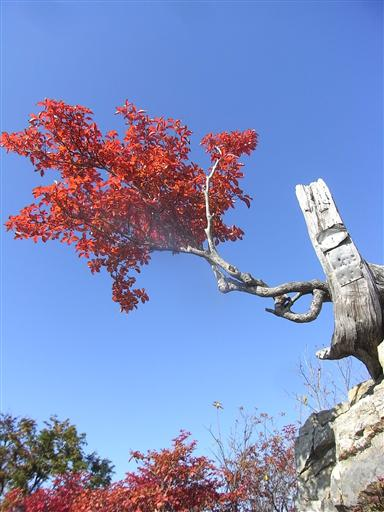
30分ほど休憩して、混雑する山頂を出発する。
日が短いので、難路続きの道を暗くなる前に下る必要がある。

絶壁を慎重に下る。
岩場は登りよりも下りのほうが難しい。
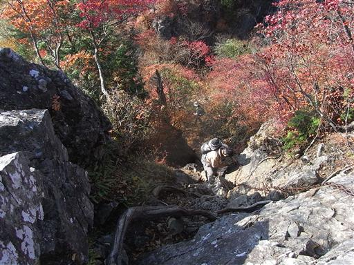
斜面に広がる紅葉は赤、黄、緑、黄緑などいろいろな色が混じっている。
所々に緑が入っているのがまた美しい。
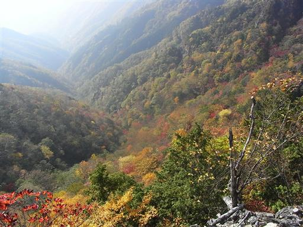
今度は目の前に見える西岳を登り返す。
登山口から山頂までの標高差は大したことがないが、
アップダウンが大きいので、それなりに体力を奪われる。
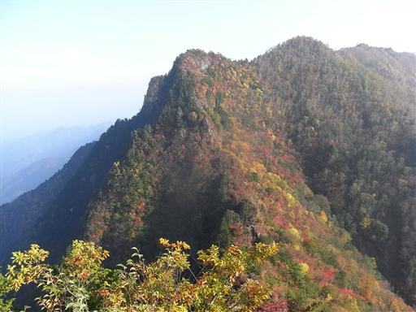
八丁峠を過ぎると後は普通の登山道を下るのみ。
日がだいぶ落ちてきた。本当に日が暮れるのが早い。
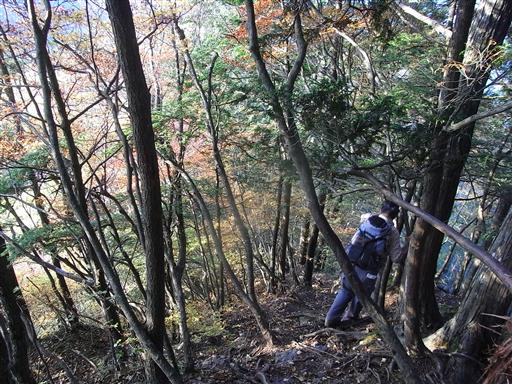
16:59 駐車場到着。
来た時に停まっていた何台かの車はもう全てなくなっていた。
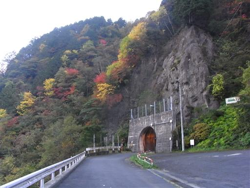